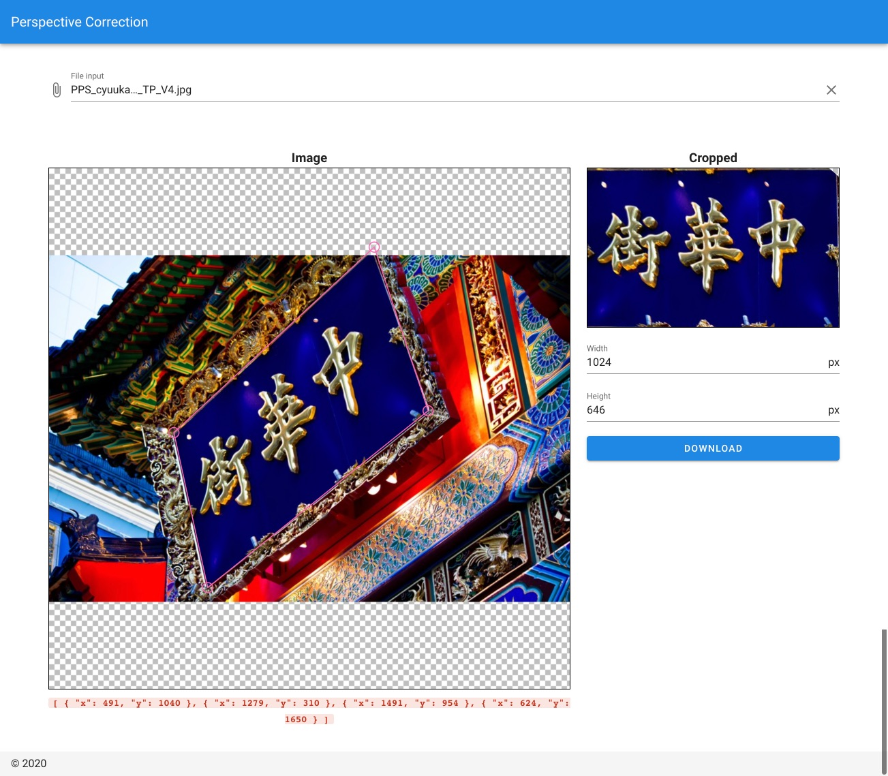

- Sun 20 September 2020
- vue.js typescript
- mani3
- #vue.js typescript
はじめに
特定の画像から台形補正を行い、補正した画像をダウンロードできるようにした。
もともとの目的は、切り出した画像からテキスト検出用のデータセットを作るために、ある写真から矩形のカードや看板など切り出すということがやりたかった。
はじめは、ちまちま GIMP で切り出し＆台形補正していたがもう少し簡単にできるようにしたかったので、ツールを作ったという感じである。
できたもの
- Perspective Correction

※ 使っている画像は、フリー写真素材ぱくたその画像です。
画像を読み込んで、切り出したい枠をドラッグできます。
切り出した画像を台形補正して、JPG形式でダウンロードできるようになってます。
Vue.jsのコンポーネントももう少し分けてきれいに作りたい気持ちだったけど、形にはなったのでよしとする。
- リポジトリ
- https://github.com/mani3/image-perspective-correction
ツール
参考
ほとんど、こちらの記事を参考につくりました🙇♀️
- https://memo.sugyan.com/entry/2018/09/03/212712